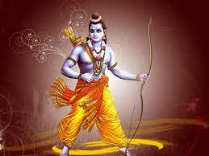

RAMAYAN
According to the Ramayan, Ram was born to King Dasharatha and Queen
Kaushalya in the city of Ayodhya. His birth is celebrated as the
festival of Ram Navami. Ram grew up as a skilled and virtuous prince,
loved by his subjects. Ram's marriage to Sita, an incarnation of the
goddess Lakshmi, is a central event in the Ramayana. He won the hand of
Sita by stringing the divine bow of Lord Shiva, a task that many had
failed to accomplish. Rama's stepmother, Kaikeyi, influenced by her maid
Manthara, asked King Dasharatha to exile Rama to the forest for 14 years
and crown her son Bharata as the king. Despite Dasharatha's reluctance,
Ram willingly accepted the exile to honor his father's promise. While in
exile, Sita was abducted by the demon king Ravana, who took her to his
kingdom of Lanka. Rama, along with his loyal companion Hanuman and an
army of monkeys, waged a war against Ravana to rescue Sita. The epic
climaxes with the great battle between Rama's forces and Ravana's army.
With the help of Hanuman, Sugriva, Lakshmana, and other allies, Rama
ultimately defeated Ravan and rescued Sita. After the victory, Rama
returned to Ayodhya with Sita and Lakshmana. The people of Ayodhya
celebrated his return with the festival of Diwali, marking the triumph
of light over darkness.